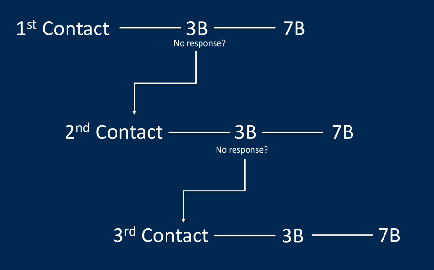

Chapter 7 Networking
In this section, we would talk about networking.Networking is the process of making connections and building relationships. It can help you get more job/ internship opportunities. There are some useful tips for you to start networking.
7.1 Timeline
Step one: Systematic Outreach
Have 2 contacts for each of your top 5 companies from your list Reach out to one person from each company at the same time
– This will seem overwhelming at first but will space out over time
Follow the “3B7” model of timing/tracking your outreach

Step 2: Recap
Focus on those in functionally-relevant positions
Target Boosters (but expect Obligates & Curmudgeons)
Treat the process probabilistically
In two hours, we’ll have scheduled an informational meeting
Part 3: Convince Advocates
We still aren’t going to sell ourselves
Focus on being likable
– Starts with listening
Use the TIARA framework(more information would be added in coffee chat section)
– Small talk
– Q&A
– Next Steps
7.4 How to write professional emails
Brief: Less than 75 words
Human: Connection goes first
Subtle: Request advice & insight, not job assistance
Direct: Make your ask in the form of a question
Egoless: Over half the word count is about the contact(no ‘about me’)
Sincere: Define interest narrowly (“your experience at Company X”) and broadly (“brand management in the east coast tech space”)
7.6 Coffee chat – what to say
Informal coffee meetings can sometimes prove the most consequential of your career. But it’s easy to be deceived by the casualness of an invitation to grab a coffee and imagine these opportunities are less important than they can be. They aren’t actually job interviews or pitch meetings, but they’re more intentional than chance conversations at networking events.
1. Know Your Desired Outcome, But Start With Small Talk
You can begin with three questions:
– How’s your day going so far (temp check – are they chatty)
– How did you join your organization? (you don’t get to talk more than 2 mins)
– What are you working on right now (optional)
2. Connect by Asking Rapport Building Questions